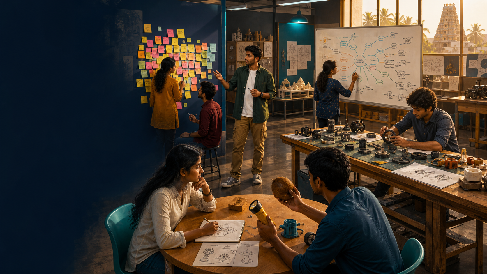

Studio station 01
Working rule
Move beyond “just brainstorm.” Enter four creative stations, learn when each method works and select the right tool for a venture situation.
Step 1 of 3 · Explore
An idea-generation method is simply a structured way to help a team think beyond its first obvious answer.

Step 2 of 3 · Case 1 of 3
The best method depends on what the team needs to achieve—not which technique sounds most impressive.
Step 3 of 3 · Apply
Choose a method, respond to its creative prompt and turn a real problem into a testable venture concept.
Mission complete
You explored four methods, matched them to different creative tasks and produced a structured idea with a small test.